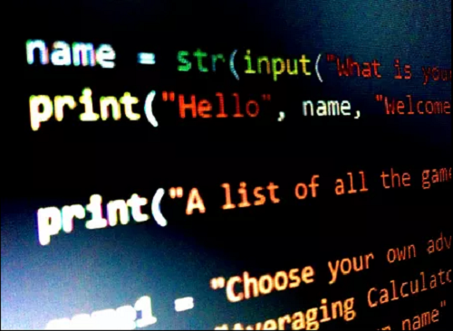
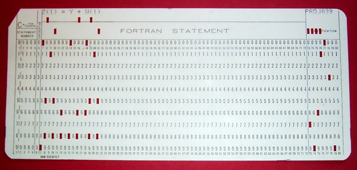
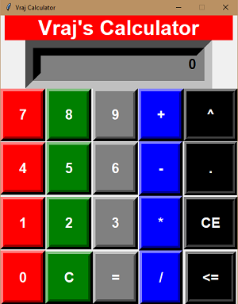

3 Ways To Get Started With Programming!
January 2021 
Many people want to learn to program nowadays. It may be for work, self-study, or you’re just interested in code executions. The first programming compiler was “invented” in 1954 by IBM. They named it FORTRAN. It was a groundbreaking discovery, but it didn’t do much. It had 32 statements, and could only compute a fraction of the data that languages can today. FORTRAN was the reason programming became interesting as it was the first language to use if loops (which we still use today!) It might be hard for children and adults to learn programming these days, as there’s an overwhelming amount of compilers compared to the last century. So today I will teach you 3 ways to get started with your first program!
Usually, young coders start with Python as it’s the easiest language to learn the basics of. So I recommend the 1st way to start programming is to use Python. Python will teach you if loops, else statements, while loops, inputs, executions, etc. After getting a basic understanding of Python you can easily transition into a higher-level language such as Java or C++.
The second way is to get your hands dirty with youtube tutorials and different books. Programming is such a likable career because it is hands-on. You get to do all sorts of things in programming just from your computer at home. This is the reason I got started with programming. I can create and learn from the comfort of my own home. I don’t need to go to some office or learn in-person: everything is on my computer, which I like! There are so many ways to learn your first programming language. Google is going to be your best friend when programming.
The last way to start programming is to do a project of your own. This allows you to get more hands-on with the language and implement what you learn in this idea you want to make. For example, I started with Python and created a GUI calculator. It was pretty cool in my opinion, and I learned so much about different functions. This specific project allowed me to pursue a career in programming, which I thought was pretty cool.
Programming isn’t for everyone, but for those of you who want to start it, this is the perfect place! Hope you enjoyed my first blog! I know it’s a bit bad, but as everyone always says, “practice makes it perfect” Thank You!